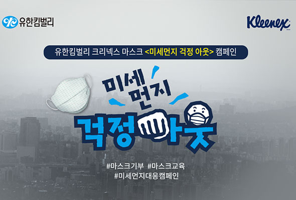
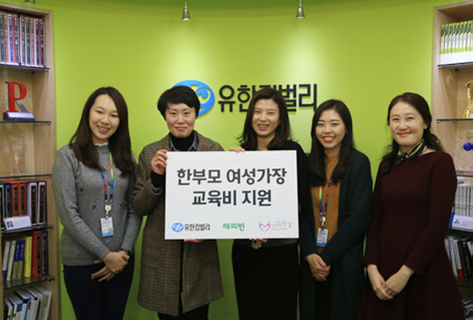

유한킴벌리 나눔문화
유한킴벌리가 생각하는 사회친화활동은 지속가능한 사회를 위하여 회사와 사원이 함께 참여하는 기부활동을 의미합니다.
유한킴벌리 희망뱅크는 2019년에 구축한 회사, 사원, 소비자가 함께 참여하는 새로운 온라인 나눔 플랫폼입니다.
회사의 제품 기부, 사원의 봉사와 기부참여, 회사의 매칭 펀드 조성 노력이 디지털 기술과 만나
52만명이라는 소비자의 공감과 참여를 만들었습니다.
유한킴벌리 제품 기부
기저귀 기부(희망뱅크), 생리대 기부(힘내라 딸들아), 마스크 기부(미세먼지 걱정아웃), 어린이를 돕기위한 바자회 제품 기부 등의 제품기부 프로그램을 운영하고 있습니다.
사원들의 기부 및 봉사활동 참여
유한킴벌리 사원들은 2005년부터 여성임파워먼트 활동을 지원하는 기부프로그램과 연말급여 1%나눔캠페인에 참여하고 있으며, 기부 뿐 아니라 전 사업장 협업을 통하여 다양한 봉사프로그램에 참여하고 있습니다. 유한킴벌리의 모든 사원들은 평생동안 947그루의 나무심기를 실천하고 있으며, 신입사원은 입사 첫 해 신혼부부나무심기 프로그램의 자원봉사자로 참여하고, 신임임원은 숲 체험프로그램인 그린캠프에 자원봉사자로서 참여하고 있습니다.